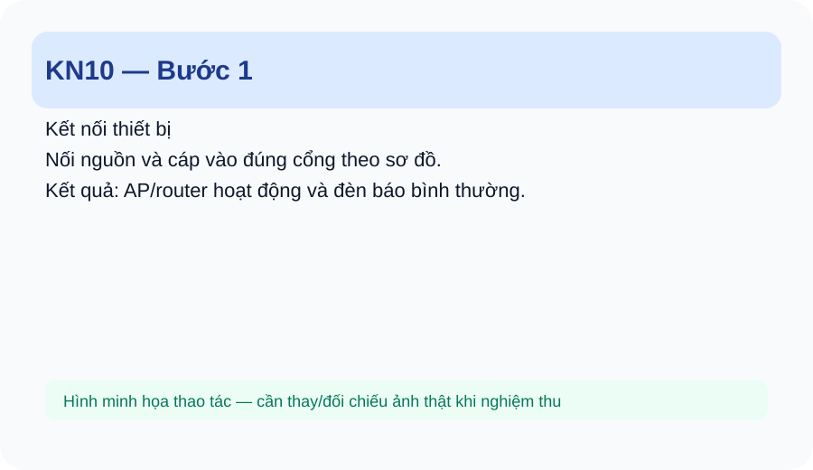
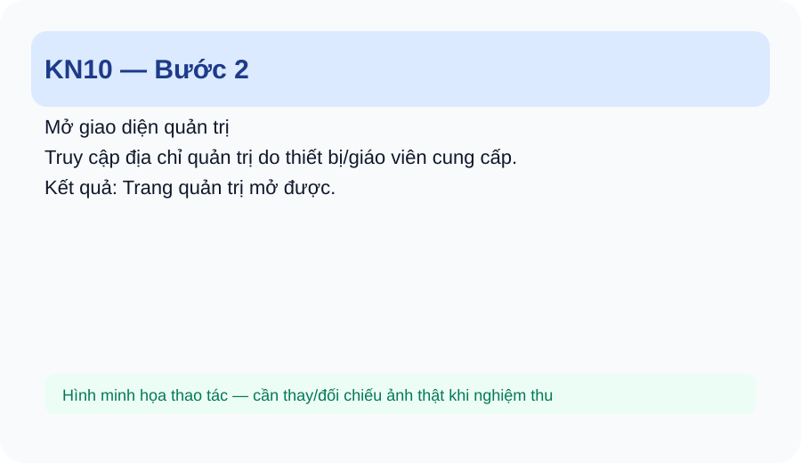
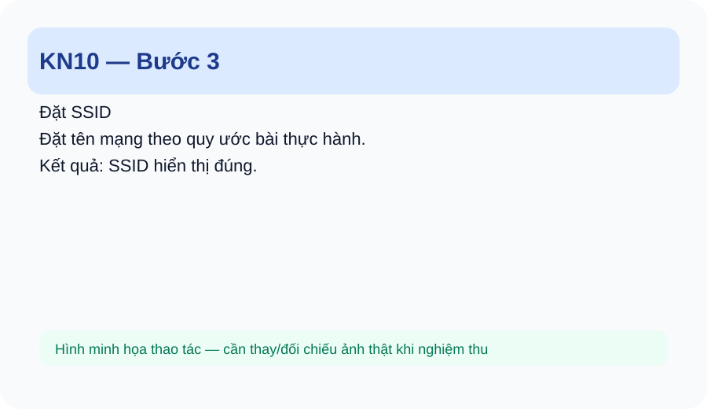
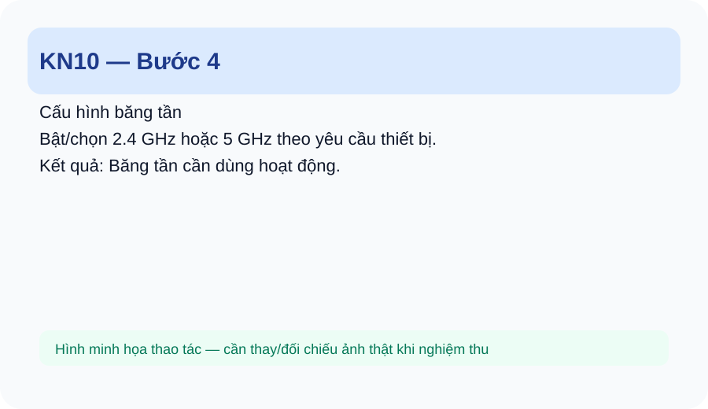
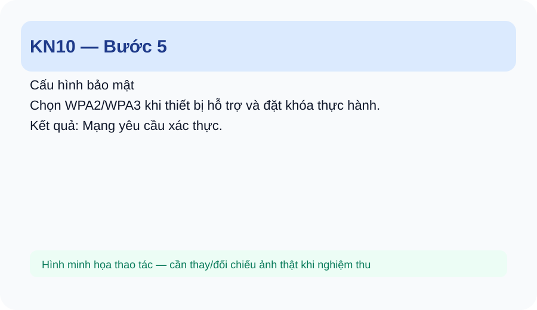
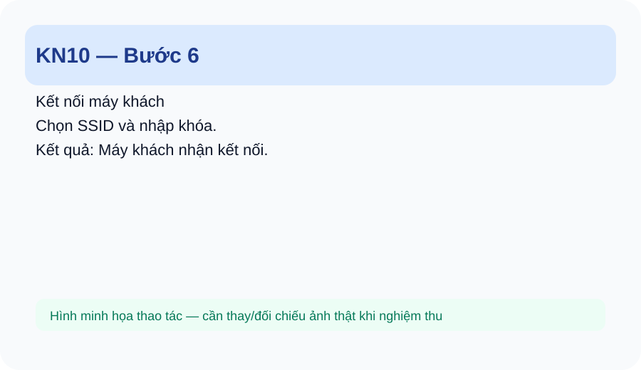
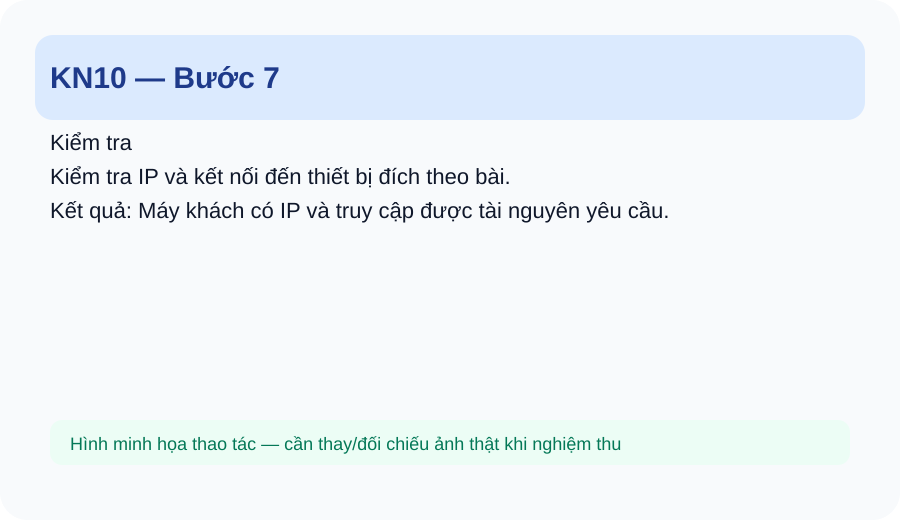

<!doctype html><html lang="vi"><head><meta charset="utf-8"><meta name="viewport" content="width=device-width,initial-scale=1"><title>KN10 — Lắp đặt và cấu hình Wi-Fi</title><style>:root{--b:#1d4ed8;--ok:#047857;--w:#b45309;--d:#be123c;--ink:#0f172a;--line:#e2e8f0}*{box-sizing:border-box}body{margin:0;font-family:Inter,Arial,sans-serif;background:#f8fafc;color:var(--ink);line-height:1.65}.wrap{max-width:1080px;margin:auto;padding:22px 16px 60px}.hero{background:linear-gradient(135deg,#0f172a,#1e3a8a);color:white;border-radius:24px;padding:30px;margin-bottom:18px}.hero h1{font-size:clamp(28px,5vw,46px);line-height:1.1;margin:8px 0}.hero p{color:#dbeafe}.nav{position:sticky;top:0;z-index:4;background:#fff;border:1px solid var(--line);padding:10px 14px;border-radius:14px;margin-bottom:18px}.nav a{margin-right:14px;color:#1d4ed8;font-weight:700;text-decoration:none}.box{background:white;border:1px solid var(--line);border-radius:18px;padding:20px;margin:16px 0}.goal{background:#eff6ff;border-left:5px solid var(--b)}.step{border:1px solid #cbd5e1;border-radius:18px;background:#fff;margin:18px 0;overflow:hidden}.step h3{margin:0;padding:15px 18px;background:#f1f5f9}.step .body{padding:18px}.step img{width:100%;max-width:900px;border:1px solid #e2e8f0;border-radius:14px;background:#f8fafc}.ok{background:#ecfdf5;border-left:5px solid var(--ok);padding:12px 15px;border-radius:10px}.wrong{background:#fff1f2;border-left:5px solid var(--d);padding:12px 15px;border-radius:10px}.warn{background:#fff7ed;border-left:5px solid var(--w);padding:12px 15px;border-radius:10px}table{width:100%;border-collapse:collapse;background:white}th,td{border:1px solid #e2e8f0;padding:9px;vertical-align:top}th{background:#f1f5f9}.check{font-size:17px}.small{font-size:14px;color:#475569}@media(max-width:700px){.nav a{display:inline-block;margin:3px 8px 3px 0}.hero{padding:22px}.box{padding:15px}}code{background:#eef2ff;padding:2px 6px;border-radius:6px}</head><body><main class="wrap"><section class="hero"><div>KN10 • KỸ NĂNG NGHỀ</div><h1>Lắp đặt và cấu hình Wi-Fi</h1><p>Lắp đặt AP/router Wi-Fi, cấu hình SSID và bảo mật cơ bản, kiểm tra thiết bị kết nối.</p></section><nav class="nav"><a href="index.html">Trang chủ</a><a href="_sidebar.md">Lộ trình</a><a href="#steps">Các bước</a><a href="#practice">Thực hành</a><a href="#assessment">Đánh giá</a></nav><section class="box goal"><h2>1. Em sẽ làm được gì?</h2><ul><li>Xác định vị trí và kết nối AP/router.</li><li>Đăng nhập giao diện quản trị.</li><li>Đặt SSID và cấu hình Wi-Fi 2.4/5 GHz theo thiết bị.</li><li>Thiết lập WPA2/WPA3 khi thiết bị hỗ trợ.</li><li>Kết nối máy khách và kiểm tra.</li></ul></section><section class="box"><h2>2. Chuẩn bị</h2><ul><li>Router/AP Wi-Fi thực tế.</li><li>Nguồn điện, cáp mạng.</li><li>Máy tính/điện thoại thực hành.</li><li>Thông tin cấu hình do giáo viên cung cấp.</li></ul></section><section class="box"><h2>3. Kiến thức tối thiểu</h2><ul><li>2.4 GHz và 5 GHz.</li><li>802.11a/b/g/n/ac/ax ở mức nhận biết.</li><li>SSID.</li><li>WPA2/WPA3.</li><li>WAN/LAN ở mức nhận biết.</li><li>Vị trí AP ảnh hưởng vùng phủ sóng.</li></ul></section><section class="box"><h2>4. Nhìn thao tác mẫu</h2><p>Quan sát: nối nguồn + uplink → đăng nhập → đặt SSID → đặt bảo mật → lưu → kết nối máy khách → kiểm tra.</p></section><section id="steps"><h2>5. Làm từng bước</h2><article class="step"><h3>Bước 1. Kết nối thiết bị</h3><div class="body"><p><strong>Em làm:</strong> Nối nguồn và cáp vào đúng cổng theo sơ đồ.</p><p class="small">📷 <strong>Gợi ý ảnh thật:</strong> chụp cận cảnh đúng vị trí tay/dụng cụ/kết quả của bước này.</p><div class="ok"><strong>Kết quả đúng:</strong> AP/router hoạt động và đèn báo bình thường.</div><div class="wrong"><strong>Nếu sai:</strong> Cắm nhầm WAN/LAN: đối chiếu sơ đồ trước khi cấu hình.</div></div></article><article class="step"><h3>Bước 2. Mở giao diện quản trị</h3><div class="body"><p><strong>Em làm:</strong> Truy cập địa chỉ quản trị do thiết bị/giáo viên cung cấp.</p><p class="small">📷 <strong>Gợi ý ảnh thật:</strong> chụp cận cảnh đúng vị trí tay/dụng cụ/kết quả của bước này.</p><div class="ok"><strong>Kết quả đúng:</strong> Trang quản trị mở được.</div><div class="wrong"><strong>Nếu sai:</strong> Không vào được: kiểm tra IP máy quản trị và kết nối cáp.</div></div></article><article class="step"><h3>Bước 3. Đặt SSID</h3><div class="body"><p><strong>Em làm:</strong> Đặt tên mạng theo quy ước bài thực hành.</p><p class="small">📷 <strong>Gợi ý ảnh thật:</strong> chụp cận cảnh đúng vị trí tay/dụng cụ/kết quả của bước này.</p><div class="ok"><strong>Kết quả đúng:</strong> SSID hiển thị đúng.</div><div class="wrong"><strong>Nếu sai:</strong> Sai tên: sửa trước khi kiểm tra máy khách.</div></div></article><article class="step"><h3>Bước 4. Cấu hình băng tần</h3><div class="body"><p><strong>Em làm:</strong> Bật/chọn 2.4 GHz hoặc 5 GHz theo yêu cầu thiết bị.</p><p class="small">📷 <strong>Gợi ý ảnh thật:</strong> chụp cận cảnh đúng vị trí tay/dụng cụ/kết quả của bước này.</p><div class="ok"><strong>Kết quả đúng:</strong> Băng tần cần dùng hoạt động.</div><div class="wrong"><strong>Nếu sai:</strong> Thiết bị không hỗ trợ: dùng băng tần được hỗ trợ.</div></div></article><article class="step"><h3>Bước 5. Cấu hình bảo mật</h3><div class="body"><p><strong>Em làm:</strong> Chọn WPA2/WPA3 khi thiết bị hỗ trợ và đặt khóa thực hành.</p><p class="small">📷 <strong>Gợi ý ảnh thật:</strong> chụp cận cảnh đúng vị trí tay/dụng cụ/kết quả của bước này.</p><div class="ok"><strong>Kết quả đúng:</strong> Mạng yêu cầu xác thực.</div><div class="wrong"><strong>Nếu sai:</strong> Không kết nối: kiểm tra chế độ bảo mật và khóa.</div></div></article><article class="step"><h3>Bước 6. Kết nối máy khách</h3><div class="body"><p><strong>Em làm:</strong> Chọn SSID và nhập khóa.</p><p class="small">📷 <strong>Gợi ý ảnh thật:</strong> chụp cận cảnh đúng vị trí tay/dụng cụ/kết quả của bước này.</p><div class="ok"><strong>Kết quả đúng:</strong> Máy khách nhận kết nối.</div><div class="wrong"><strong>Nếu sai:</strong> Sai khóa: nhập lại chính xác.</div></div></article><article class="step"><h3>Bước 7. Kiểm tra</h3><div class="body"><p><strong>Em làm:</strong> Kiểm tra IP và kết nối đến thiết bị đích theo bài.</p><p class="small">📷 <strong>Gợi ý ảnh thật:</strong> chụp cận cảnh đúng vị trí tay/dụng cụ/kết quả của bước này.</p><div class="ok"><strong>Kết quả đúng:</strong> Máy khách có IP và truy cập được tài nguyên yêu cầu.</div><div class="wrong"><strong>Nếu sai:</strong> Có Wi-Fi nhưng không có IP: kiểm tra DHCP/uplink theo sơ đồ.</div></div></article></section><section class="box"><h2>6. Kiểm tra kết quả</h2><ol><li>AP/router được cấp nguồn.</li><li>Đúng cổng kết nối.</li><li>Đúng SSID.</li><li>Đúng băng tần yêu cầu.</li><li>WPA2/WPA3 phù hợp.</li><li>Máy khách kết nối và kiểm tra được.</li></ol></section><section class="box"><h2>7. Lỗi thường gặp và cách sửa</h2><table><tr><th>Lỗi</th><th>Dấu hiệu</th><th>Cách kiểm tra/sửa</th></tr><tr><td>Không mở giao diện</td><td>Sai IP quản trị hoặc kết nối.</td><td>Kiểm tra IP máy và cổng kết nối.</td></tr><tr><td>SSID không thấy</td><td>Wi-Fi tắt hoặc sai băng tần.</td><td>Kiểm tra radio/băng tần.</td></tr><tr><td>Kết nối nhưng không có IP</td><td>DHCP/uplink có vấn đề.</td><td>Kiểm tra DHCP và kết nối LAN/WAN.</td></tr><tr><td>Vùng phủ yếu</td><td>Vị trí AP không phù hợp.</td><td>Đưa AP về vị trí thông thoáng theo yêu cầu bài.</td></tr></table></section><section id="practice" class="box"><h2>8. Thực hành 3 mức</h2><ol><li>Làm theo: cấu hình một SSID WPA2.</li><li>Tự làm: cấu hình 2.4/5 GHz theo tình huống.</li><li>Xử lý lỗi: máy khách thấy SSID nhưng không nhận IP.</li></ol></section><section class="box"><h2>9. Checklist</h2><ul class="check"><li>☐ AP/router được cấp nguồn.</li><li>☐ Đúng cổng kết nối.</li><li>☐ Đúng SSID.</li><li>☐ Đúng băng tần yêu cầu.</li><li>☐ WPA2/WPA3 phù hợp.</li><li>☐ Máy khách kết nối và kiểm tra được.</li></ul></section><section id="assessment" class="box"><h2>10. Đánh giá năng lực</h2><table><tr><th>Mức</th><th>Yêu cầu</th><th>Minh chứng</th></tr><tr><td>Làm theo</td><td>Cấu hình theo mẫu.</td><td>SSID và kết nối đúng.</td></tr><tr><td>Tự làm</td><td>Cấu hình theo tình huống.</td><td>Thiết bị hoạt động đúng.</td></tr><tr><td>Xử lý lỗi</td><td>Khoanh vùng lỗi Wi-Fi cơ bản.</td><td>Sửa và kiểm tra lại.</td></tr></table></section><div class="box small"><strong>Trạng thái:</strong> Draft/Review — nội dung, phiên bản Windows/thiết bị và ngưỡng đánh giá cần giáo viên nghiệm thu trước khi coi là chuẩn chính thức.</div></main></body></html>